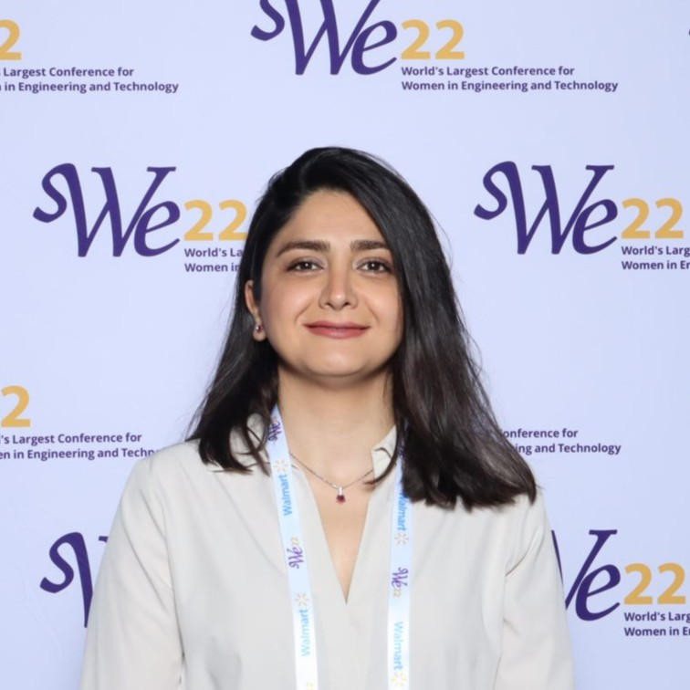

Team
The Human-Centered Robotics and Neurotechnology Lab at Texas State University brings together students working on human-robot interaction, brain-computer interfaces, and drones.
Principal investigator

Roya Salehzadeh, Ph.D.
Assistant Professor, Ingram School of Engineering
Dr. Salehzadeh directs the Human-Centered Robotics and Neurotechnology Lab. Her research focuses on human-robot interaction, brain-computer interfaces, and machine learning for adaptive robotic systems, with an emphasis on trust, perceived safety, and how people respond to robot behavior.
She received her Ph.D. in Mechanical Engineering and M.S. in Computer Science from The University of Alabama, where she worked with Prof. Nader Jalili on human-in-the-loop control, trust in human-robot collaboration, and brain-computer interfaces. She also holds an M.Sc. in Mechanical Engineering from Amirkabir University of Technology and a B.Sc. in Mechanical Engineering from Urmia University. Before joining Texas State, she was an Assistant Professor of Mechanical, Robotics, and Industrial Engineering at Lawrence Technological University.
Education
- Ph.D., Mechanical Engineering, The University of Alabama2023
- M.S., Computer Science, The University of Alabama2023
- M.Sc., Mechanical Engineering, Amirkabir University of Technology2014
- B.Sc., Mechanical Engineering, Urmia University2004
Students
[Student name]
[Position, e.g. Undergraduate Researcher]
Perceived Safety in Human-Robot Collaboration
[Student name]
[Position, e.g. Undergraduate Researcher]
Brain-Drone Race
[Student name]
[Position, e.g. Undergraduate Researcher]
Drone Design
Join the lab
We are recruiting PhD students, and we welcome motivated undergraduate and master's students at Texas State who want research experience in robotics, brain-computer interfaces, or machine learning. See how to join.